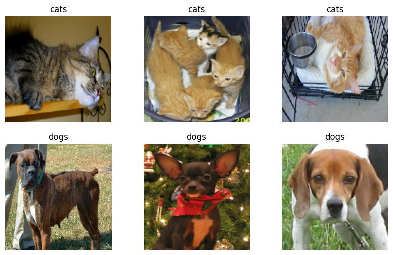
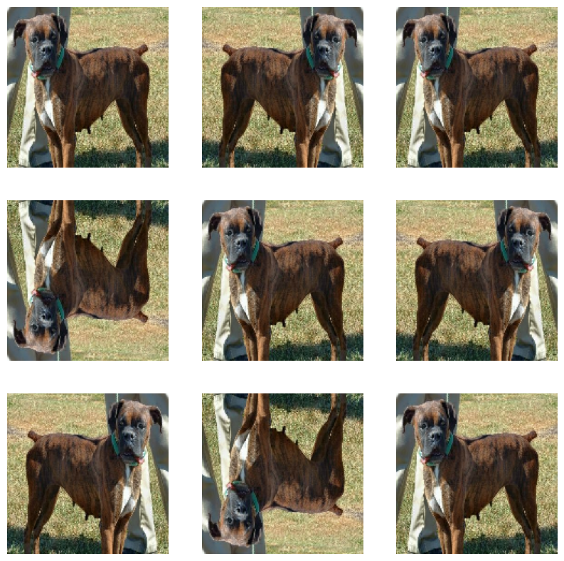
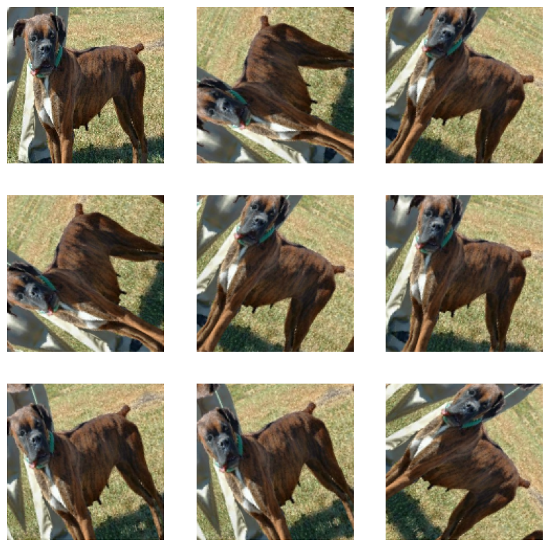

In this blog post, I will be creating several convolutional neural networks with Keras to classify images of dogs and cats.
Setup
Since I am working in Google Colab, I need to upgrade Keras before importing it.
!pip install keras --upgrade
Requirement already satisfied: keras in /usr/local/lib/python3.10/dist-packages (2.15.0)
Collecting keras
Downloading keras-3.0.5-py3-none-any.whl (1.0 MB)
━━━━━━━━━━━━━━━━━━━━━━━━━━━━━━━━━━━━━━━━ 1.0/1.0 MB 7.5 MB/s eta 0:00:00
Requirement already satisfied: absl-py in /usr/local/lib/python3.10/dist-packages (from keras) (1.4.0)
Requirement already satisfied: numpy in /usr/local/lib/python3.10/dist-packages (from keras) (1.25.2)
Requirement already satisfied: rich in /usr/local/lib/python3.10/dist-packages (from keras) (13.7.0)
Collecting namex (from keras)
Downloading namex-0.0.7-py3-none-any.whl (5.8 kB)
Requirement already satisfied: h5py in /usr/local/lib/python3.10/dist-packages (from keras) (3.9.0)
Requirement already satisfied: dm-tree in /usr/local/lib/python3.10/dist-packages (from keras) (0.1.8)
Requirement already satisfied: ml-dtypes in /usr/local/lib/python3.10/dist-packages (from keras) (0.2.0)
Requirement already satisfied: markdown-it-py>=2.2.0 in /usr/local/lib/python3.10/dist-packages (from rich->keras) (3.0.0)
Requirement already satisfied: pygments<3.0.0,>=2.13.0 in /usr/local/lib/python3.10/dist-packages (from rich->keras) (2.16.1)
Requirement already satisfied: mdurl~=0.1 in /usr/local/lib/python3.10/dist-packages (from markdown-it-py>=2.2.0->rich->keras) (0.1.2)
Installing collected packages: namex, keras
Attempting uninstall: keras
Found existing installation: keras 2.15.0
Uninstalling keras-2.15.0:
Successfully uninstalled keras-2.15.0
ERROR: pip's dependency resolver does not currently take into account all the packages that are installed. This behaviour is the source of the following dependency conflicts.
tensorflow 2.15.0 requires keras<2.16,>=2.15.0, but you have keras 3.0.5 which is incompatible.
Successfully installed keras-3.0.5 namex-0.0.7
#all necessary importsimport osimport numpy as npos.environ["KERAS_BACKEND"] ="tensorflow"import kerasfrom keras import utils, layers, modelsimport tensorflow_datasets as tfdsfrom tensorflow import expand_dimsfrom tensorflow import data as tf_datafrom matplotlib import pyplot as plt
We can import an existing dataset from tfds and split it into training, validation, and test datasets.
#create datasetstrain_ds, validation_ds, test_ds = tfds.load("cats_vs_dogs",# 40% for training, 10% for validation, and 10% for test (the rest unused) split=["train[:40%]", "train[40%:50%]", "train[50%:60%]"], as_supervised=True, # Include labels)print(f"Number of training samples: {train_ds.cardinality()}")print(f"Number of validation samples: {validation_ds.cardinality()}")print(f"Number of test samples: {test_ds.cardinality()}")
Downloading and preparing dataset 786.67 MiB (download: 786.67 MiB, generated: 1.04 GiB, total: 1.81 GiB) to /root/tensorflow_datasets/cats_vs_dogs/4.0.1...
Dataset cats_vs_dogs downloaded and prepared to /root/tensorflow_datasets/cats_vs_dogs/4.0.1. Subsequent calls will reuse this data.
Number of training samples: 9305
Number of validation samples: 2326
Number of test samples: 2326
WARNING:absl:1738 images were corrupted and were skipped
The next two cells are for preparing the datasets by resizing them and splitting them into batches:
We can visualize some of the images from the dataset with matplotlib:
#show 3 random cats, 3 random dogsdef showdata(ds): plt.figure(figsize=(10, 6)) numdogs =0 numcats =0for images, labels in ds.take(1):for i inrange(32):ifint(labels[i]) ==1and numdogs <3: # if we need a dog... ax = plt.subplot(2, 3, numdogs+4) # get the next slot on the 2nd row plt.imshow(images[i].numpy().astype("uint8")) plt.axis("off") plt.title("dogs") numdogs +=1ifint(labels[i]) ==0and numcats <3: # if we need a cat... ax = plt.subplot(2, 3, numcats+1) # get the next slot on the 1st row plt.imshow(images[i].numpy().astype("uint8")) plt.axis("off") plt.title("cats") numcats +=1if numdogs ==3and numcats ==3: # if we are done...breakshowdata(train_ds)

Model 0: Baseline
By counting the total number of each label, we can construct a baseline model by simply guessing the most frequent label:
labels_iterator= train_ds.unbatch().map(lambda image, label: label).as_numpy_iterator()totalcats =0totaldogs =0for label in labels_iterator:if label ==0: totalcats +=1else: totaldogs +=1print(f"{totalcats} cats and {totaldogs} dogs")print(f"baseline: {round((totaldogs/(totalcats+totaldogs))*100,1)}% accuracy by always guessing dogs")
4637 cats and 4668 dogs
baseline: 50.2% accuracy by always guessing dogs
As you can see, this model is 50.2% accurate since 50.2% of the dataset is dogs.
Model 1: Convolutional Neural Network
We first construct a basic CNN with Conv2D layers alternating with MaxPooling2D layers, ending with Flatten and Dense layers to get a single output. We can then compile the model, using BinaryCrossentropy as the loss function since we only have 2 categories.
I experimented with various numbers of layers, adding more dropout layers, using bigger kernel sizes for the Conv2D layers, and using different activation functions, but ultimately this simple model worked best for me.
The accuracy of model 1 stabilized at around 63%. This is 10% better than baseline, which is enough to be at least statistically significant. There is definitely overfitting, since the training accuracy rose to 97%, while the validation accuracy stayed at around 63%.
Model 2: Data Augmentation
We can transform the images before using them to combat overfitting. One example of a transformation is the RandomFlip layer, which randomly horizontally/vertically reflects the image:
for image, _ in train_ds.take(1): plt.figure(figsize=(10, 10)) first_image = image[0] #get the first image ax = plt.subplot(3, 3, 1) plt.imshow(first_image /255) #plot the first image normally plt.axis('off')for i inrange(8): ax = plt.subplot(3, 3, i +2) #for each slot... augmented_image = layers.RandomFlip()(expand_dims(first_image, 0)) #transform the image plt.imshow(augmented_image[0] /255) plt.axis('off')

The RandomRotation layer randomly rotates the image within a specified range of angles:
for image, _ in train_ds.take(1): plt.figure(figsize=(10, 10)) first_image = image[0] ax = plt.subplot(3, 3, 1) plt.imshow(first_image /255) plt.axis('off')for i inrange(8): ax = plt.subplot(3, 3, i +2) augmented_image = layers.RandomRotation(0.2)(expand_dims(first_image, 0)) plt.imshow(augmented_image[0] /255) plt.axis('off')

We can add these layers into the model to improve its accuracy:
The validation accuracy near the end of training was around 75%. This is a 10% increase from model1, which is definitely a lot better, but still not as good as a human. The graph shows significantly less overfitting, with validation and training data showing roughly the same accuracy during each epoch.
#Model 3: Data Preprocessing We can refine the model further by adding a preprocessing layer to rescale the pixel values to be between -1 and 1, rather than 0 and 255.
The validation accuracy stabilized at around 83%. There was 20% increase from model1, which is nearing human levels of accuracy. There is hardly any overfitting to be seen in the model.
#Model 4: Transfer Learning We can further improve model accuracy by using an existing model (MobileNetV3Large in this case).
The model summary shows that there are almost 3 million parameters in the model, most of them coming from the MobileNetV3Large layer. However, the total number of trainable parameters is 961, which is almost nothing compared to the previous models.
The model has a constant 96% accuracy right out of the box, which is far better than model1, with almost 30% better validation accuracy. For some reason, there is the opposite of overfitting happening, with the validation accuracy stabilizing at 10% better than the training accuracy.
Since model4 performed the best, I tested it against test_ds and got 95.5% accuracy, which around what I would expect based on the validation accuracy from training.